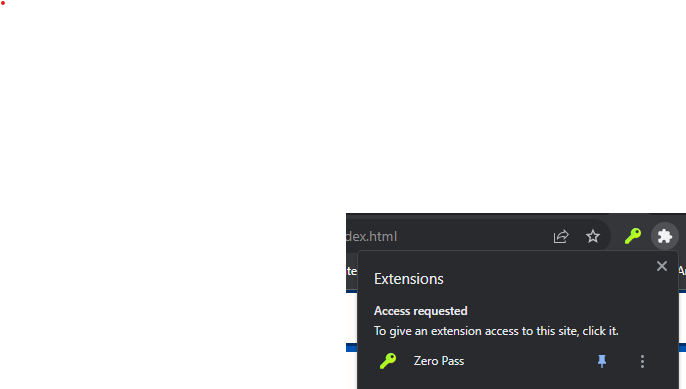

Welcome to Zero Pass
Before experimenting with passkeys, we recommend you pin the
extension's action button to your Chrome toolbar.

A note on encryption
Zero Pass allows you to use the extension as a webauthn provider/password manager and import/export
passkeys and manage passwords based on a single strong pass phrase (like a crypto wallet).
In a nutshell:
- Your pass phrase is never saved (even locally): zero pass only uses a hash of your
passphrase to preserve the content of it from an attack.
- all of your import/export as well as cloud storage is encrypted with an AES
key generated based on your pass phrase. No one can decrypt it without the hash of your pass phrase.
-
passwords and passkeys are generated just in time, by hashing the RP domain, your username,
and the hash of your pass phrase together
-
if you are not using username-less auth (the case for most websites), you automatically recover
your credential with only your pass phrase and your username
-
for website that are relying on usernameless auth, you can either backup your credential yourself
(the files are encrypted and therefore safe to store anywhere) or rely on the cloud sync feature
Your local storage is encrypted with a PIN: this mitigates the risk of your data being stolen from the
chrome storage directly.
How to test the extension
A few websites will let you test the extension:
- webauthn.io: comes with advanced settings so you can test with and without attestation
- webauthn.me: comes with advanced settings so you can test with and without attestation
- webauthn.lubu.ch: comes with an open source PHP backend (github) but does not handle responses without user handle